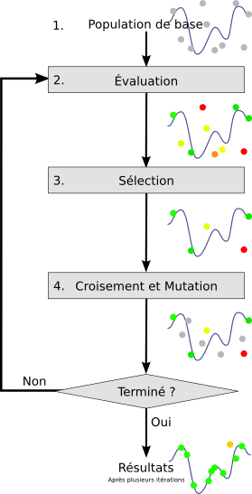
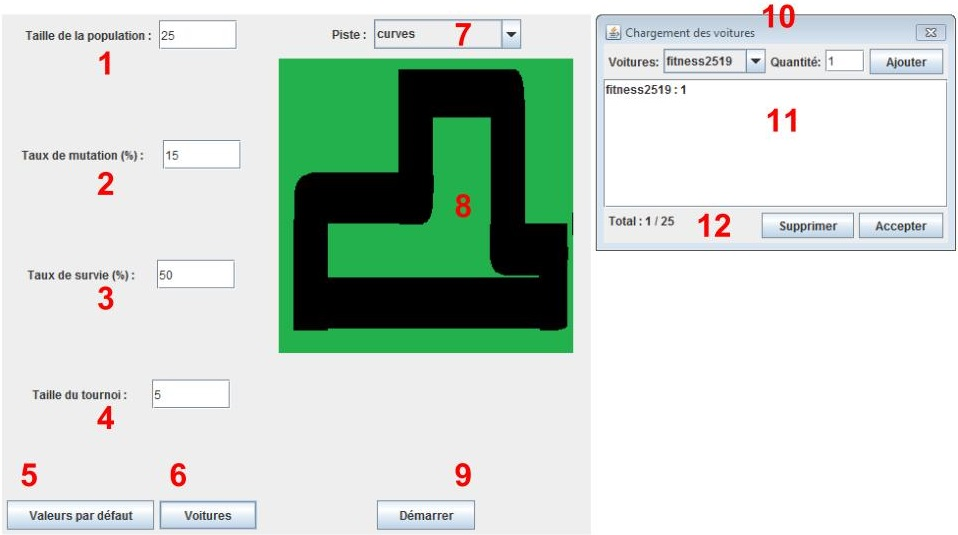
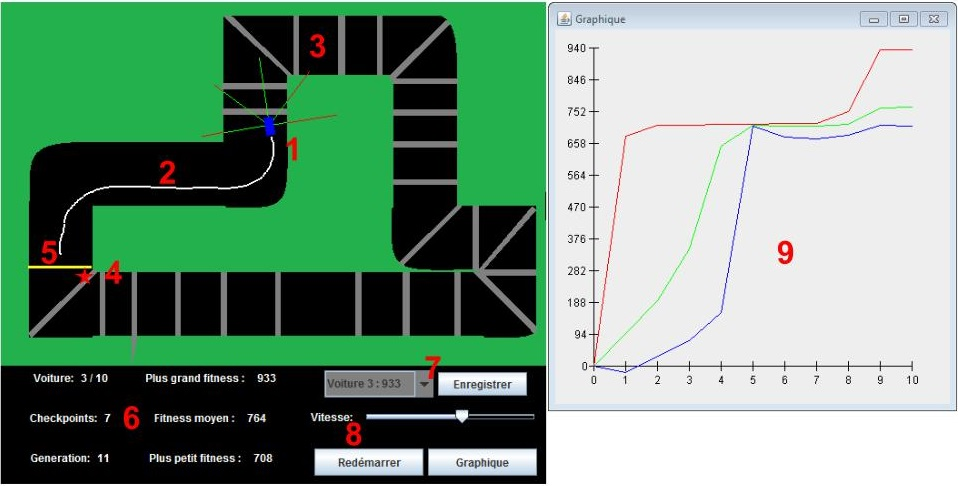

Darwin Cars
Lorsque l'informatique s'inspire de la biologie
Introduction
Darwin Cars est un simulateur qui permet de visualiser l’évolution par sélection naturelle, le procédé qui a mené à la diversité de la vie sur Terre aujourd’hui. Plus particulièrement montrer de manière visuelle ce à quoi peut ressembler l’apprentissage d’une intelligence artificielle. Cette simulation se déroule dans un environnement en 2 dimensions, vu du dessus. Des voitures contrôlées par un réseau de neurones artificiel se déplacent sur une piste. Chaque voiture obtient un score d’adaptabilité (fitness) en fonction de la distance qu’elle a parcourue avant de sortir de la piste. On sélectionne alors les individus les plus adaptés et les autres sont éliminés. Ensuite, les réseaux de neurones ayant survécu sont croisés jusqu’à ce que la population retrouve sa taille initiale. En répétant ces opérations un grand nombre de fois, les intelligences artificielles apprendront sur leur environnement et éventuellement, une d’entre elles parviendra à parcourir la piste en entier. Cette méthode est connue sous le nom d’algorithme génétique. L’usager pourra régler certains paramètres qui règlementent la simulation afin de pouvoir tester lesquels permettent un apprentissage optimal. Une fois qu’une intelligence artificielle satisfait les attentes, il est possible de sauvegarder les valeurs de son réseau de neurones et par la suite de le tester dans divers circuits. Darwin Cars permettra aussi à son usager d’utiliser des pistes virtuelles qu’il a créé lui-même. Le simulateur est hébergé dans un site Web pour offrir une plus grande accessibilité par tous. Grâce à cette approche, les usagers pourront se partager des réseaux ainsi que des pistes virtuelles avec comme objectif ultime de créer la voiture parfaite pouvant réussir tous les circuits.
L'équipe
Frédéric Paquette
frederic_paquette@hotmail.comCharlie Laplante
charlielaplante@hotmail.comFrançois Rioux
francoisrioux67@hotmail.comSuperviseur de projet : Pierre Prud'homme
Le projet
Les réseaux de neuronnes
Les réseaux de neurones sont un type d'intelligence artificielle basés sur le fonctionnement du cerveau chez les animaux. Des couches de neuronnes transmettent de l'information à la couche suivante à travers des connections appellées synapses qui modifient cette information, jusqu'à ce qu'elle atteigne la couche finale qui produit un résultat. Prenons par exemple un animal qui voit de la nourriture. L'information entre dans le réseau de neurones par la couche d'entrée, dans ce cas ci les yeux. L'image de la nourriture passera par plusieurs couches de neurones, certaines qui analyseront la forme de l'objet, d'autre sa couleur, etc... Finalement, toutes ces informations convergeront pour indiquer à l'animal qu'il s'agit bel et bien de nourriture. Il pourra alors décider de la manger. C'est ce qui se produit dans un réseau de neurones artificiel, mais en utilisant des nombres plutôt que des neurotransmetteurs. L'information arrive dans les neurones de la couche d'entrée et est par la suite propagée vers la sortie du réseau en passant à travers des couches cachées. Chaque neurone reçoit la valeur de chacun des neurones de la couche précédente modifiée par le poid de la connection entre les deux. Finalement, on atteint la couche de sortie où les valeurs des neurones sont interprétées en tant que résultat.
Exemple de fonctionnement d'un réseau de neurones

Dans le cas de Darwin Cars, la couche d'entrée reçoit l'information provennant de 5 capteurs qui mesure la distance séparant la voiture du bords de la piste. Le réseau reçoit en fait la distance du capteur qui est en dehors de la piste. Ainsi, un capteur entièrement sur la piste retournera la valeur 0 et ne sera donc pas pris en compte dans la prise de décision, puisque cette direction ne présente pas un danger de collision imminente. Cette information est envoyée dans une couche caché composée de 8 neurones qui l'interpretent. Elle parvient ensuite à un unique neurone de sortie qui contrôle la direction de virage de la voiture. Une valeur négative fera tourner la voiture dans le sens anti-horaire tandis qu'une valeur positive dans le sens horaire.
Pour plus d'informations sur les réseaux de neurones, consultez la série Neural Networks Demystified (en anglais) par Stephen Welch. Ses explications claires et simples ont été indispensables à la réalisation de ce projet.
L'algorithme génétique
L'algorithme génétique est une méthode d'optimisation basée sur l'évolution par sélection naturelle. Pour utiliser cette approche, on modélise un problème pour pouvoir représenter une solution possible en une série de données et on établie une façon de tester le résultat de cette série face au problème, appellée fonction d'adaptabilité. Une série de données représente un individu d'une façon similaire à l'ADN d'un être vivant, d'où l'appellation "génétique". Au début de l'algorithme, on génère une population initiale aléatoire. On applique à chaque individu la fonction d'adaptabilité pour déterminer son éfficacité. On élimine un certain pourcentage des individus les moins adaptés au problème. Parmi les survivants, on effectue des croisements pour créer de nouveaux individus. À cette étape, il y a une faible chance qu'une mutation se produise, modifiant un peu le code génétique du nouvel individu. On crée des individu jusqu’à ce que la population retrouve sa taille initiale. On recommence alors avec la nouvelle population, jusqu’à ce que on obtienne un résultat satisfaisant. Les étapes d'évaluation, de sélection et de croisement s'appelle une génération.
Exemple de fonctionnement d'un algorithme génétique
Dans le cas de Darwin Cars, le code génétique d'une voiture est le poids de chacune des synapses de son réseau de neurone. Puisqu'il y a 5 neurones d'entrée, 8 neurones cachés et 1 neurone de sortie, le total des synapses est de 48. Pour déterminer le score d'adaptabilité d'une voiture, elle gagne des points en franchissant des points de contrôles sur la piste et en perd selon le temps qu'elle a pris à parcourir la piste. Ainsi, une voiture doit parcourir la plus grande distance possible le plus rapidement possible. Si une voiture entre en collision avec le bord de la piste ou bien qu'elle franchit la ligne d'arrivée, son test s'arrête et on passe à la prochaine. Pour le repeuplement, on utilise une formule de tournoi plutôt que de croiser 2 voitures. Une certain nombre de voitures parmi les survivantes sont choisies au hasard. La plus adaptée parmi elles produit un enfant. Cet enfant est une copie de son parent avec au moins une synapse modifiée. Ensuite, on applique les chances de mutation pour modifier d'autres synapses.
L'usager décide de la plus part des paramètres régissant l'algorithme, c'est à dire :
- La taille de la population
- Le pourcentage de chance de mutation
- Le pourcentage de voitures éliminées à chaque génération
- Le nombre de voitures dans le tournoi pour la reproduction
L'application
Le menu du simulateur
- Le nombre de voitures à chaque génération
- Le pourcentage de chance qu'un enfant reçoive un mutation
- Le pourcentage de voiture éliminée à chaque génération
- Le nombre de voitures qui s'affronteront pour la reproduction
- Un bouton contenant des valeurs par défaut pour une simulation correcte
- Un bouton pour accéder à l'interface de chargement des voitures
- La liste des pistes disponibles pour la simulation
- Un aperçu de la piste choisie
- Le bouton pour démarrer la simulation
- Choix de la voiture à charger et de la quantité voulue
- Liste des voitures chargées
- Total des voitures chargées, bouton pour en retirer une de la liste et pour accepter la sélection
Le simulateur
- La voiture en cours de test. Elle évalue sa position grâce à 5 capteurs. La portion verte du capteur indique qu'il est sur la piste et la portion rouge qu'il est en dehors
- La trace du parcours de la voiture. Elle permet de voir comment la voiture a pris les virages. Elle sert aussi à l'empêcher de retourner sur ses pas, puisqu'elle est éliminée si elle la touche
- Les points de contrôle que la voiture doit franchir pour augmenter son score d'adaptabilité
- Marqueur indiquant la position atteinte par la voiture la plus adaptée
- La ligne d'arrivée, lorsqu'une voiture la franchie, on passe à la prochaine pour éviter qu'elle ne fasse le parcours en boucle
- Affichage des divers statistiques
- Liste des voitures les plus adaptées et le bouton pour les sauvegarder
- Contrôle du déroulement de la simulation
- Graphique affichant la plus grande adaptabilité, l'adaptabilité moyenne ainsi que la plus petite adaptabilité en fonction des générations